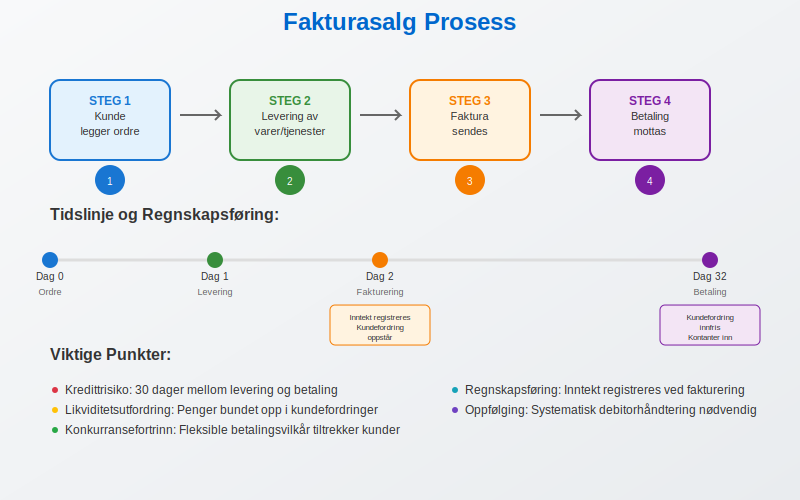
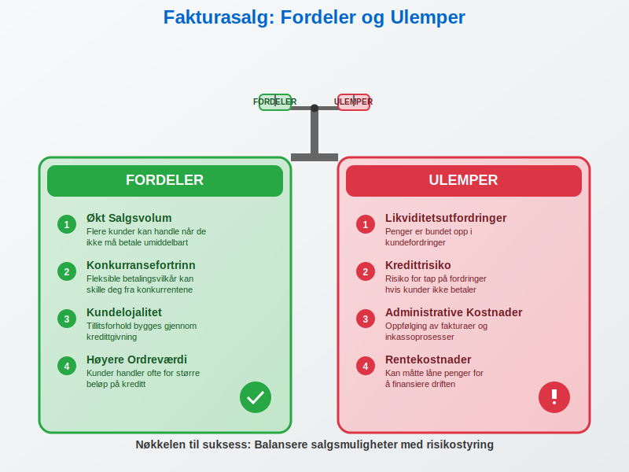
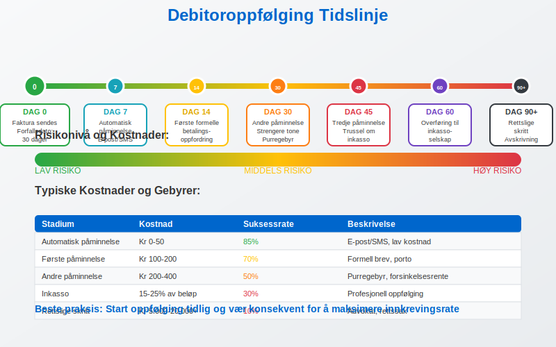
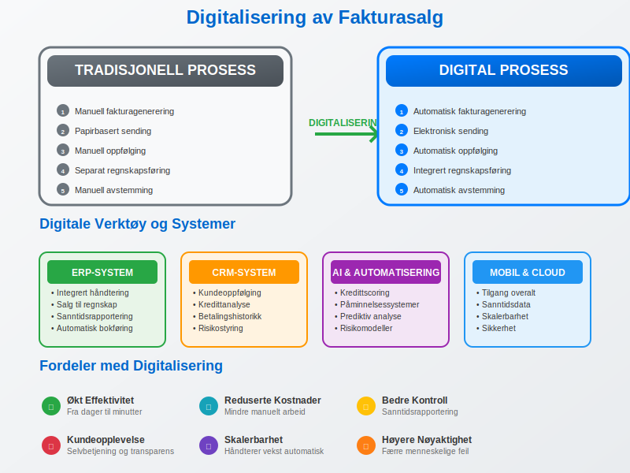
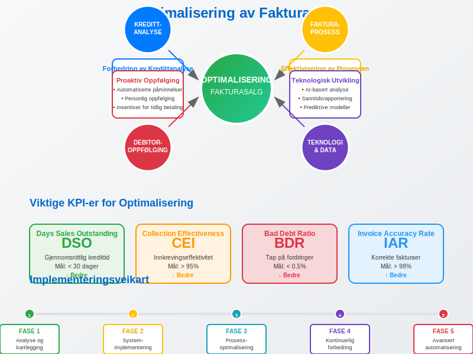

Fakturasalg er en regnskapsmetode hvor inntekter registreres på det tidspunktet en faktura utstedes til kunden, uavhengig av når betalingen faktisk mottas. Dette er en fundamental del av periodiseringsprinsippet i regnskapet og påvirker direkte bedriftens driftsresultat og likviditetsstyring.
For en grundig introduksjon til salg i regnskap, se artikkelen Salg.
Seksjon 1: Grunnleggende om Fakturasalg
Fakturasalg skiller seg fra kontantsalg ved at det oppstår et tidsintervall mellom leveranse og betaling. Dette skaper både muligheter og utfordringer for bedriften, da det påvirker arbeidskapitalen og krever aktiv debitoroppfølging.

Kjennetegn ved Fakturasalg
- Kredittid: Kunden får en betalingsfrist, vanligvis 14-30 dager
- Risiko: Bedriften bærer risikoen for at kunden ikke betaler
- Kontantstrøm: Negativ påvirkning på kortsiktig likviditet
- Kundeservice: Økt kundetilfredshet gjennom fleksible betalingsvilkår
Seksjon 2: Regnskapsføring av Fakturasalg
Når en bedrift selger på faktura, må transaksjonen bokføres korrekt i henhold til dobbel bokføring og norske regnskapsregler.
Bokføringseksempel
Ved salg av varer for 10.000 kr + 2.500 kr MVA på faktura:
| Konto | Kontonavn | Debet | Kredit |
|---|---|---|---|
| 1500 | Kundefordringer | 12.500 | |
| 3000 | Salgsinntekt | 10.000 | |
| 2700 | Utgående MVA | 2.500 |
Når fakturaen betales, reverseres kundefordringen:
| Konto | Kontonavn | Debet | Kredit |
|---|---|---|---|
| 1900 | Bank | 12.500 | |
| 1500 | Kundefordringer | 12.500 |
Seksjon 3: Fordeler og Ulemper med Fakturasalg
Fordeler for Bedriften
- Økt salgsvolum: Flere kunder kan handle når de ikke må betale umiddelbart
- Konkurransefortrinn: Fleksible betalingsvilkår kan skille deg fra konkurrentene
- Kundelojalitet: Tillitsforhold bygges gjennom kredittgivning
- Høyere ordreværdi: Kunder handler ofte for større beløp på kreditt
Ulemper og Risikoer
- Likviditetsutfordringer: Penger er bundet opp i kundefordringer
- Kredittrisiko: Risiko for tap på fordringer
- Administrative kostnader: Oppfølging av fakturaer og inkasso
- Rentekostnader: Kan måtte låne penger for å finansiere driften

Seksjon 4: Kredittanalyse og Kundevurdering
Før en bedrift tilbyr fakturasalg til nye kunder, bør det gjennomføres en grundig kredittanalyse for å minimere risikoen for tap.
Kredittanalyseprosess
-
Innhenting av kredittopplysninger
- Kredittsjekk hos Bisnode, Experian eller lignende
- Årsregnskap og nøkkeltall
- Referanser fra andre leverandører
-
Vurdering av betalingsevne
- Analyse av likviditet
- Egenkapitalandel
- Historisk betalingsadferd
-
Fastsettelse av kredittramme
- Maksimalt utestående beløp per kunde
- Betalingsvilkår og kredittid
- Sikkerhetsstillelse ved behov
Kredittklassifisering av Kunder
| Risikoklasse | Beskrivelse | Kredittramme | Betalingsvilkår |
|---|---|---|---|
| A - Lav risiko | Etablerte kunder med god betalingshistorikk | Høy | 30 dager |
| B - Middels risiko | Nye kunder med akseptabel økonomi | Middels | 14 dager |
| C - Høy risiko | Kunder med svak økonomi eller dårlig historie | Lav | Forskudd/kontant |
Seksjon 5: Oppfølging og Debitorhåndtering
Effektiv debitorhåndtering er kritisk for suksess med fakturasalg. Dette innebærer systematisk oppfølging av utestående fakturaer og proaktiv kommunikasjon med kunder.
Debitoroppfølgingsprosess
- Dag 0: Faktura sendes med tydelig forfallsdato
- Dag 7: Automatisk påminnelse via e-post eller SMS
- Dag 14: Første formelle betalingsoppfordring
- Dag 30: Andre påminnelse med strengere tone
- Dag 45: Tredje påminnelse med trussel om inkasso
- Dag 60: Overføring til inkassoselskap
Nøkkeltall for Debitoroppfølging
| Nøkkeltall | Beregning | Målsetting |
|---|---|---|
| Gjennomsnittlig kredittid | (Kundefordringer × 365) / Omsetning | < 30 dager |
| Andel forfalte fordringer | Forfalte fordringer / Totale fordringer | < 5% |
| Tapsprosent | Tap på fordringer / Omsetning | < 0,5% |

Seksjon 6: Finansiering av Fakturasalg
Fakturasalg binder opp arbeidskapital, og bedrifter må ofte finansiere denne kapitalbindingen gjennom ulike finansieringsløsninger.
Finansieringsalternativer
Tradisjonell Bankfinansiering
- Driftskreditt: Fleksibel kredittramme for å dekke kortsiktige likviditetsbehov
- Kundefordringslån: Lån med kundefordringer som sikkerhet
- Kontokredit: Overtrekksrett på bankkonto
Alternative Finansieringsløsninger
- Factoring: Salg av kundefordringer til finansieringsselskap
- Invoice Trading: Digital plattform for handel med fakturaer
- Supply Chain Finance: Leverandørfinansiering gjennom kjøpers bank
Kostnader ved Finansiering
| Finansieringstype | Typisk Rente/Gebyr | Fordeler | Ulemper |
|---|---|---|---|
| Driftskreditt | 3-8% p.a. | Fleksibel, rask tilgang | Krav til sikkerhet |
| Factoring | 1-3% av fakturabeløp | Ingen kredittrisiko | Høyere kostnader |
| Invoice Trading | 0,5-2% av fakturabeløp | Konkurransedyktige priser | Begrenset tilgjengelighet |
Seksjon 7: Digitalisering av Fakturasalg
Moderne teknologi har revolusjonert fakturasalgsprosessen, fra elektronisk fakturering til automatisert debitoroppfølging.
Digitale Verktøy og Systemer
- ERP-systemer: Integrert håndtering av salg, fakturering og regnskap
- CRM-systemer: Kundeoppfølging og kredittanalyse
- Automatiserte påminnelsessystemer: Reduserer manuelt arbeid
- AI-basert kredittscoring: Forbedret risikovurdering
Fordeler med Digitalisering
- Reduserte administrative kostnader: Automatisering av rutineoppgaver
- Raskere fakturabehandling: Fra dager til minutter
- Bedre kontroll: Sanntidsrapportering og dashboards
- Forbedret kundeopplevelse: Selvbetjening og transparens

Seksjon 8: Juridiske Aspekter ved Fakturasalg
Fakturasalg er regulert av flere lover og forskrifter som bedrifter må forholde seg til.
Relevant Lovgivning
- Bokføringsloven: Krav til dokumentasjon og oppbevaring
- Bokføringsforskriften: Spesifikke krav til fakturainnhold
- Inkassoloven: Regulerer oppfølging av forfalte fordringer
- Forsinkelsesrenteloven: Renter ved forsinket betaling
Viktige Juridiske Prinsipper
- Avtalefriheten: Partene kan avtale betalingsvilkår
- Lojalitetsplikten: Begge parter skal opptre lojalt
- Forsinkelsesrente: Automatisk påløp fra forfallsdato
- Bevisbyrden: Leverandør må bevise leveranse
Seksjon 9: Bransjespesifikke Utfordringer
Ulike bransjer har forskjellige utfordringer knyttet til fakturasalg, avhengig av kundestruktur, produkttype og markedsforhold.
B2B vs B2C Fakturasalg
Business-to-Business (B2B)
- Lengre kredittider: 30-60 dager er vanlig
- Større ordreverdier: Høyere risiko per kunde
- Profesjonelle innkjøpsprosesser: Mer forutsigbare betalingsmønstre
- Kontraktuelle forhold: Detaljerte leveringsvilkår
Business-to-Consumer (B2C)
- Kortere kredittider: 14-30 dager
- Mindre ordreverdier: Lavere risiko per transaksjon
- Impulskjøp: Mindre planlagte innkjøp
- Forbrukerrettigheter: Strengere regulering
Bransjespesifikke Utfordringer
| Bransje | Typisk Kredittid | Hovedutfordringer |
|---|---|---|
| Bygg og anlegg | 45-60 dager | Lange prosjekter, underleverandørkjeder |
| Detaljhandel | 14-30 dager | Høyt volum, lave marginer |
| Konsulentvirksomhet | 30 dager | Tjenestekvalitet, faktureringsgrunnlag |
| Industri | 30-45 dager | Sesongvariasjoner, råvarepriser |
Seksjon 10: Måling og Optimalisering
For å lykkes med fakturasalg må bedrifter kontinuerlig måle og optimalisere sine prosesser basert på relevante nøkkeltall.
Viktige KPI-er for Fakturasalg
- Days Sales Outstanding (DSO): Gjennomsnittlig tid fra salg til betaling
- Collection Effectiveness Index (CEI): Effektivitet i innkrevingsprosessen
- Bad Debt Ratio: Andel tap på fordringer
- Invoice Accuracy Rate: Andel korrekte fakturaer første gang
Optimaliseringsstrategier
Forbedring av Kredittanalyse
- Implementer automatiserte kredittsjekker
- Utvikle interne scoringmodeller
- Regelmessig oppdatering av kundedata
Effektivisering av Fakturaprosessen
- Automatiser fakturagenerering
- Implementer elektronisk fakturering
- Reduser faktureringsfeil gjennom kvalitetskontroll
Proaktiv Debitoroppfølging
- Automatiserte påminnelsessystemer
- Personlig oppfølging av store kunder
- Insentiver for tidlig betaling

Seksjon 11: Internkontroll og Risikostyring
Effektiv internkontroll er essensielt for å minimere risiko og sikre korrekt håndtering av fakturasalg.
Kontrollaktiviteter
- Segregering av oppgaver: Skille mellom salg, fakturering og innkreving
- Autorisasjonsnivåer: Klare fullmakter for kredittgivning
- Regelmessige avstemminger: Kontroll av kundefordringer
- Dokumentasjonskrav: Sporbarhet i alle transaksjoner
Risikoidentifikasjon og -håndtering
Operasjonelle Risikoer
- Faktureringsfeil og manglende dokumentasjon
- Utilstrekkelig kredittanalyse
- Ineffektiv debitoroppfølging
Finansielle Risikoer
- Konsentrasjonsrisiko (få store kunder)
- Valutarisiko ved internasjonalt salg
- Likviditetsrisiko ved lang kredittid
Strategiske Risikoer
- Endringer i markedsforhold
- Ny konkurransesituasjon
- Regulatoriske endringer
Seksjon 12: Fremtidige Trender
Fakturasalg utvikler seg kontinuerlig, drevet av teknologiske fremskritt og endrede kundeforventninger.
Teknologiske Trender
- Kunstig intelligens: Forbedret kredittscoring og risikoanalyse
- Blockchain: Økt sikkerhet og transparens i transaksjoner
- Open Banking: Bedre tilgang til kunders finansielle data
- Sanntidsbetalinger: Redusert kredittid og likviditetsrisiko
Markedstrender
- Økt fokus på bærekraft: ESG-kriterier i kredittanalyse
- Personalisering: Skreddersydde betalingsløsninger
- Integrerte økosystemer: Helhetlige finansielle tjenester
- Regulatoriske endringer: Strengere krav til dokumentasjon
Konklusjon
Fakturasalg er en kompleks forretningsprosess som krever grundig planlegging, effektive systemer og kontinuerlig oppfølging. Når det håndteres korrekt, kan det være en kraftig driver for vekst og kundetilfredshet. Nøkkelen til suksess ligger i å balansere salgsmuligheter med risikostyring, samtidig som man utnytter moderne teknologi for å optimalisere prosessene.
Bedrifter som mestrer fakturasalg vil ha et betydelig konkurransefortrinn gjennom forbedret kontantstrøm, sterkere kunderelasjoner og mer effektive operasjoner. Det krever imidlertid kontinuerlig fokus på internkontroll, teknologisk utvikling og tilpasning til endrede markedsforhold.